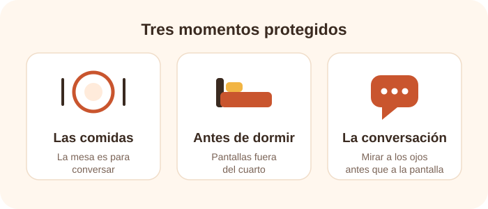

Muchas familias llegan al tema de las pantallas desde la culpa. Sienten que ceden demasiado, que el teléfono resuelve momentos difíciles y que corregirlo exigiría una disciplina que no siempre tienen. Esa culpa rara vez cambia algo. Lo que sí cambia las cosas es un acuerdo pequeño, concreto y sostenible en el tiempo.
Por qué un acuerdo funciona mejor que una prohibición
Una prohibición general obliga a decidir de nuevo en cada conflicto: cada vez hay que discutir, ceder o endurecerse. Un acuerdo, en cambio, se decide una sola vez, en frío, y después solo se recuerda. Reduce el desgaste del adulto y le da al niño un marco previsible, que es justamente lo que en los primeros años aporta seguridad.
Además, un acuerdo puede ser pequeño. No hace falta reorganizar la vida familiar entera para notar una diferencia: basta con elegir unos pocos momentos y protegerlos siempre.

Cuatro acuerdos posibles
Crear rutinas
Definan momentos y lugares donde las pantallas no sean protagonistas, especialmente durante las comidas, las conversaciones y antes de dormir.
Mirar juntos
Cuando sea posible, acompañen al niño. Pregunten qué ve, qué siente y qué piensa de lo que está pasando en la pantalla.
Cuidar la privacidad
Eviten compartir públicamente datos, rutinas, ubicación o imágenes que identifiquen innecesariamente al niño.
Ofrecer alternativas
Libros, bloques, arte, música, movimiento y juego simbólico ayudan a que la pantalla no sea la única fuente de entretenimiento disponible.
El acuerdo también es para los adultos
Un niño pequeño aprende mucho más de lo que observa que de lo que se le explica. Si la mesa está libre de teléfonos solo para él, el acuerdo no se sostiene. La coherencia no exige perfección, pero sí que la regla valga para todos los que se sientan a esa mesa.
El hábito que queremos enseñar es, casi siempre, el hábito que tenemos que revisar primero.
Qué hacer cuando el acuerdo falla
Va a fallar. Habrá viajes largos, días de enfermedad, semanas difíciles y momentos en que la pantalla sea la única salida razonable. Eso no anula el acuerdo: lo vuelve realista. Lo importante es que la excepción se nombre como excepción y que al día siguiente se retome la rutina, sin convertir el desvío en la nueva norma.
Lo que vale la pena conversar en casa
💭 ¿Qué momento del día queremos proteger primero?
💭 ¿Qué hacemos nosotros con el teléfono en ese mismo momento?
💭 ¿Qué alternativa concreta tenemos lista cuando digamos que no?
💭 ¿Qué publicamos de nuestro hijo y quién puede verlo?
Para profundizar
La infografía de las cinco preguntas y las fuentes citadas en esta entrada están reunidas en la página de recursos.
Ver recursos y bibliografía →